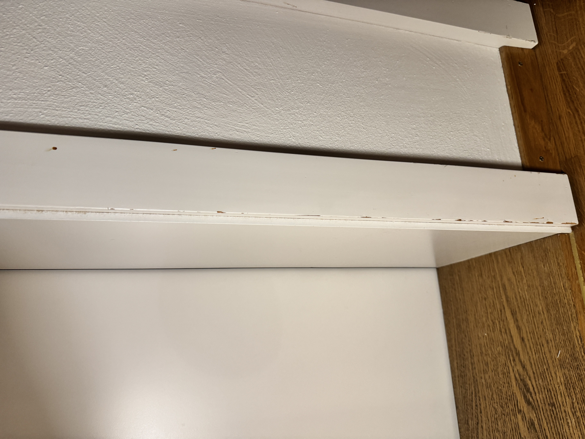
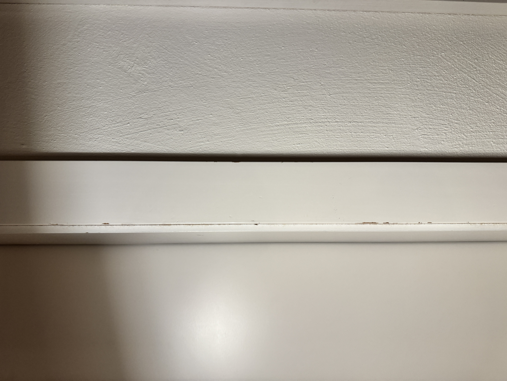
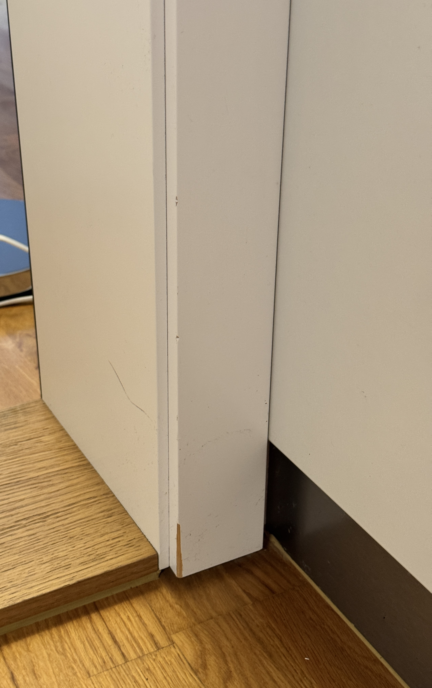

Korridor/Eingangsbereich
Mangel #3: Deutliche schwarze Abriebspuren an der Wand unterhalb der 6 Garderobenhaken
Abriebspuren Garderobe
Mangel #4: Leichte Abriebspuren an der gegenüberliegenden Wand
Abriebspuren gegenüberliegende Wand
Mangel #5: Kleine Beschädigen an der Eingangstür. Absplitterung/Kerbe, Gebrauchsspuren
Beschädigung Eingangstür
Mangel #6: Deutliche schwarze Abriebspuren an der Wand vor der Toilettentür
Abriebspuren Toilettenwand
Mangel #7: Mehrfache Beschädigungen am Türrahmen der Toilettentür:
- Mehrere braune/gelbliche Abnutzungspunkte entlang der gesamten Türrahmenleiste
- Ein deutlich sichtbarer Abrieb/Absplitterung im oberen Bereich des Rahmens
- Durchgehende Beschädigungen von oben bis unten
Beschädigungen Türrahmen Toilette
 
Mangel #8: Gebrauchsspuren an den Türrahmen von Schlafzimmer 1 und 2
Gebrauchsspuren Türrahmen Schlafzimmer 1
Gebrauchsspuren Türrahmen Schlafzimmer 2
